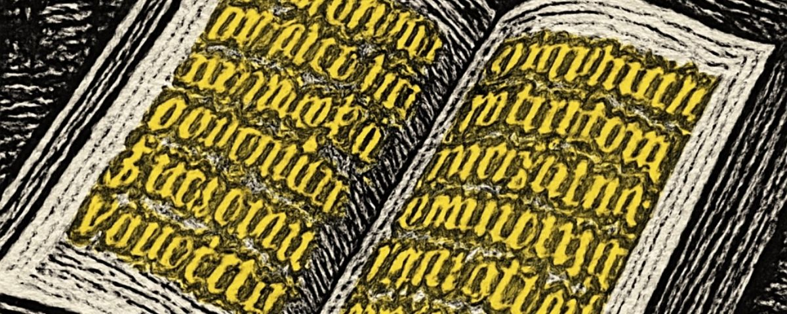

④ Dual coding
WD3_03.03.01 – situeren in tijd & ruimte

Het hemels vonnis
Macropedius, Hecastus, vv. 498–706 (selectie) · de doodsboodschap en het godsoordeel
① Voorkennis activeren
WD3_03.03.01 – situeren in tijd & ruimte
Context
Dramatische situatie
In de vorige scène ontving Hecastus de hemelse boodschapper Nomodidascalus ("de leermeester van de wet"), die een brief meebracht die Hecastus niet kon lezen. Zijn geleerde zoon Philomathes kon hem evenmin ontcijferen. Nu leest Nomodidascalus de brief voor: God zelf heeft Hecastus gewogen en te licht bevonden — een echo van het bijbelse Mene, Tekel, Peres (Daniël 5). De boodschap is onomstotelijk: Hecastus zal sterven. Wat volgt is een bittere dialoog waarin de rijke man zijn rijkdom, vrienden en familie als schild wil inzetten — en bot vangt.
④ Dual coding
WD3_03.03.01 – situeren in tijd & ruimte
⑦ Scaffolding → zelfstandig
WD3_03.02.01.02 – talige hulpmiddelen
⑤ Actieve verwerking
⑦ Scaffolding
WD3_03.02.01.01 – lectuurmethode toepassen
WD3_03.02.01 – tekst begrijpen
③ Voorbeelden & modelling
⑤ Actieve verwerking
WD3_03.02.01.01 – lectuurmethode toepassen
WD3_03.01.01 – taalsystematiek
Nomodidascalus
Has
lege
litteras
primum omnium
atque
intellige.
Si
postea
quid haesitas,
tibi
clarius
praecepero.
Hecastus
Proh Iuppiter,
cuiusmodi
haec scriptura
& haec elementa
sunt?
Nostrae
profecto
non habent
formam
stilumve curiae
quasi
hi characteres
Dei digito
exarati sint.
ita
grandem
mihi
timoris horrorem
ingerunt.
▶ Weggelaten: scènes 8–9 (vv. 539–600) — Hecastus bekent dat hij de brief niet kan lezen en roept zijn zoon Philomathes erbij; ook Philomathes faalt. Nomodidascalus onthult dat de brief van God zelf afkomstig is.
Nomodidascalus (leest voor)
Numeravit
hos vitae tuae dies
Deus verissimus
et ponderavit
minus habentes
maximus.
Divisit itaque
te
è solo
iustissimus.
Homo,
domui tuae
dispone,
quia
morieris
& non vixeris.
Hecastus
Ergóne moriar?
Nomodidascalus
Certius quidem nihil.
Hecastus
Qui moriar
annum vix agens tricesimum?
Nomodidascalus
Moriere.
nec posthac
habebis crastinum.
Hecastus
Egóne moriar,
opibus qui abundo plurimis?
cui sunt amici,
proximi,
uxor,
liberi?
Nomodidascalus
Vide
quid hi te iuverint,
moriendum erit.
Quid nunc remandas
iudici?
dic sine mora.
498Has lege litteras primum omnium atque intellige.
499Si postea quid haesitas, tibi clarius praecepero.
500Proh Iuppiter, cuiusmodi haec scriptura & haec elementa sunt?
501Nostrae profecto non habent formam stilumve curiae
502quasi hi characteres Dei digito exarati sint. ita
503grandem mihi timoris horrorem ingerunt.
539–600[weggelaten]
692Numeravit hos vitae tuae dies Deus verissimus
693et ponderavit minus habentes maximus.
694Divisit itaque te è solo iustissimus.
696Homo,
697domui tuae dispone, quia morieris &
698non vixeris.
700Ergóne moriar? — Certius quidem nihil.
701Qui moriar annum vix agens tricesimum?
702Moriere. nec posthac habebis crastinum.
703Egóne moriar, opibus qui abundo plurimis?
704cui sunt amici, proximi, uxor, liberi?
705Vide quid hi te iuverint, moriendum erit.
706Quid nunc remandas iudici? dic sine mora.
⑦ Scaffolding
⑪ Feedback die denken aanzet
WD3_03.01.01 – taalsystematiek
Grammaticale noten
1quasi hi characteres Dei digito exarati sint — vergelijkende bijzin met conjunctief (quasi + conj. praes.): 'alsof deze tekens met Gods vinger gegrift zouden zijn'. Dei digito: ablativus instrumenti.
2tibi clarius praecepero — futurum exactum (praecepero): de actie van uitleggen zal voltooid zijn vóór een ander toekomstig moment. In de Latijnse conditionale bijzin na si + praesens is het futurum exactum de standaard in de bijzin.
3Drievoudige superlativa bij Deus: verissimus — maximus — iustissimus. Elk vers heeft zijn eigen goddelijk attribuut als slotvorm. Klimax: God is achtereenvolgens de waarste (telt), de hoogste (weegt) en de rechtvaardigste (verdeelt).
4morieris … non vixeris — deponens futurum (morieris van mori) naast futurum exactum (vixeris van vivere). Morieris = 'u zult sterven' (handeling), non vixeris = 'u zult niet geleefd hebben / niet verder leven' (voltooide staat).
5Ergóne moriar … Egóne moriar — de twee retorische vragen van Hecastus zijn spiegelbeeldig: beide beginnen met het beklemtoonde persoonlijk voornomen + -ne + moriar (conjunctivus dubitativus). De herhaling benadrukt zijn ontkenning van de dood.
6opibus qui abundo plurimis — relatieve bijzin met abundare + ablativus copiae. De superlatief plurimis onderstreept zijn arrogantie: overladen met rijkdom.
7cui sunt amici, proximi, uxor, liberi — dativus possessivus: 'die vrienden heeft'. De asyndeton-reeks heeft het effect van een opsomming die adem hapt — Hecastus gooit alles in de strijd.
8moriendum erit — gerundivum van mori (onpersoonlijk passivum van het deponens) + erit: 'Er zal moeten worden gestorven' — de dood als onontkoombaar, onpersoonlijk feit.
① Voorkennis activeren
⑧ Gespreide oefening
WD3_03.01.01 – basisvocabularium
WD3_03.02.02 – betekenis geven aan teksten
Tekst 7 · Thema Dramatiek · 6de jaar
Woordenlijst
Woordenlijst op volgorde van voorkomen. basis = basiswoordenschat.